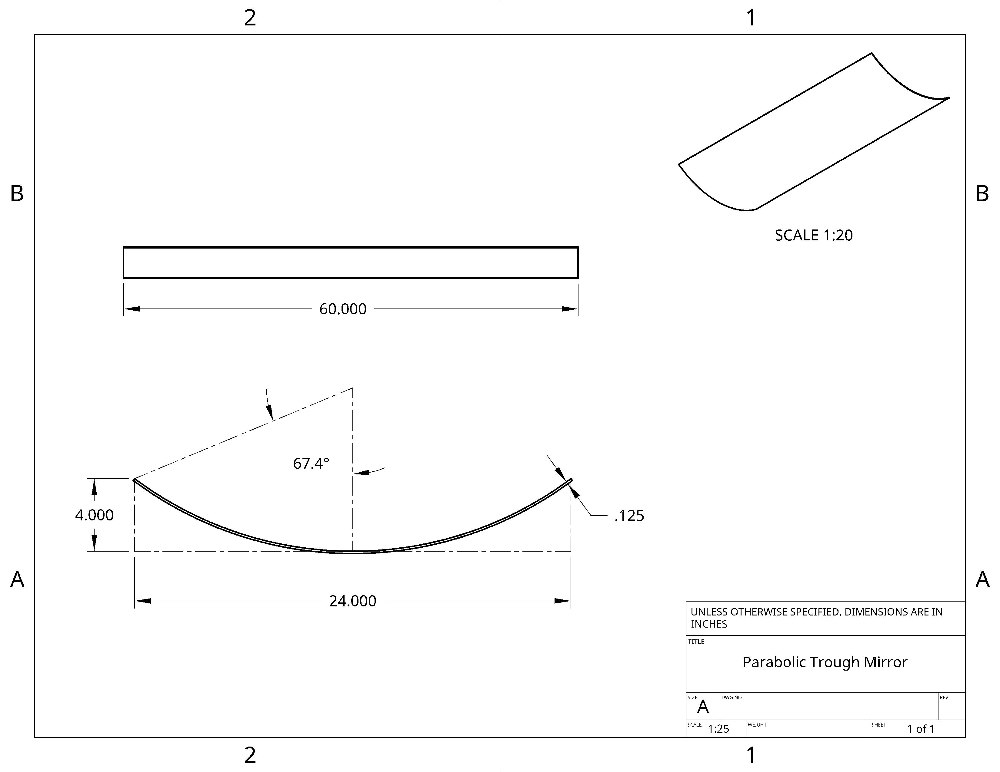
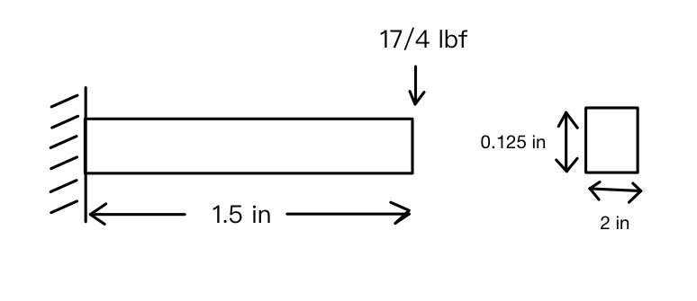
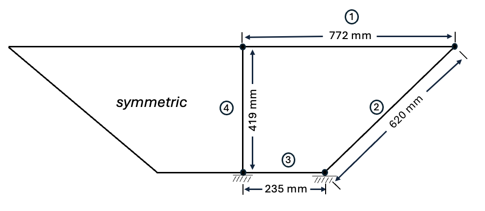
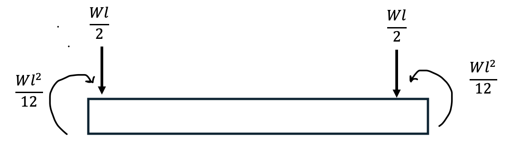

Solar Still Using Active Mirror
Senior Design Project
Design
Process from initial ideation to final design ideas
CAD Model (components)

Materials
Methods
Click on the Parameter to bring to calculations
Mirror Geometry
Heat Transfers, Fluid Properties
Pump Power Requirement
Parameter
Symbol
Value
Units
Converted Imperial Value
Imperial Units
Velocity V
0.02933
m/s
0.0962
ft/s
Pipe inner Diameter
D i
0.00635
m
0.25
in
Water density \[\rho\]
997
kg/m3
62.2407
lb/m3
kinematic viscosity \[\upsilon\]
\[1.004 \cdot 10^{\text{-6}}\]
m2 /s
\[1.0807 \cdot 10^{\text{-5}}\]
ft2 /s
Reynolds Number Re
185.50
Flow Rate \[\dot{v}\]
\[0.9288 \cdot 10^{\text{-6}}\]
\[m^3/s\]
\[3.28 \cdot 10^{\text{-5}}\]
ft3 /s
Head Loss hf
0.00726
m
0.0238
ft
Pump Power P
0.00006595
W
Moving base gear and torque requirements
Gear
Diametrial Pitch (teeth/in)
Pitch Diameter in
Number of teeth
Base Gear 12
6.327
76
Motor Gear 12
1.583
19
Support Structures
Bottom Fixed Support

2D representation of each supporting leg load
Middle Support structure Elements
Element
Area (A) m2
Second moment of Inertia (I) m4
1
\[ 0.004 \]
\[ 8.53^{\text{-6}} \]
2
\[ 0.0045 \]
\[ 2.344^{\text{-7}} \]
3
\[ 0.00813 \]
\[ 7.152^{\text{-5}} \]
4
\[ 0.006 \]
\[ 2.88^{\text{-5}} \]

2D Representation of Grid structure of Middle Support Structure

Force and moment equivalence from distrbuted weight force
Middle Support Calculations
Stiffness Matrix - will be applied for wach element of simplified frame
\[
[\mathbf{k}] = \frac{E}{L} \times
\begin{bmatrix}
AC^2 + \frac{12I}{L^2} S^2 & \left( A - \frac{12I}{L^2} \right) CS & -\frac{6I}{L}S & -\left( AC^2 + \frac{12I}{L^2} S^2 \right) & -\left( A - \frac{12I}{L^2} \right) CS & -\frac{6I}{L}S \\
\cdots & \left (AS^2 + \frac{12I}{L^2} C^2 \right) CS & \frac{6I}{L}C & -\left( A - \frac{12I}{L^2} \right) CS & -\left( AS^2 + \frac{12I}{L^2} C^2 \right) & \frac{6I}{L}C \\
\cdots & \cdots & 4I & \frac{6I}{L}S & \frac{-6I}{L}C & 2I \\
\cdots & \cdots & \cdots & AC^2 + \frac{12I}{L^2} S^2 & \left( A - \frac{12I}{L^2} \right) CS & \frac{6I}{L}S \\
\cdots & \cdots & \cdots & \cdots & AS^2 + \frac{12I}{L^2} C^2 & -\frac{6I}{L}C \\
\cdots & \cdots & \cdots & \cdots & \cdots & 4I
\end{bmatrix}
\]
Solutions for each element is cascaded to a global matrix and displacements of each mode is solved
Focal Length Calculation
\[f = \frac{Wa}{4 \tan\left(\frac{\phi}{2}\right)} = \frac{x}{4a}\]
Radial Angle Calculation
\[
\frac{24 \text{ in}}{4 \tan\left(\frac{\phi}{2}\right)} = 9
\]
\[
\phi = 67.38^\circ
\]
Parabola Radius Calculation
\[
r_r = \frac{2f}{1 + \cos\phi} = \frac{2(9)}{1 + \cos(67.38^\circ)} = 13 \:in
\]
Vertical Parabola Height Calculation
\[
H_p = \frac{Wa^2}{16f} = \frac{24^2}{16(9)} = 4 \:in
\]
Arc Length Calculation
\[
s = \frac{H_p}{2} \left\{ \sec\left(\frac{\phi}{2}\right) \cdot \tan\left(\frac{\phi}{2}\right) +
\ln \left[ \sec\left(\frac{\phi}{2}\right) + \tan\left(\frac{\phi}{2}\right) \right] \right\}
\]
\[
s = \frac{4}{2} \left\{ \sec(33.69^\circ) \cdot \tan(33.69^\circ) +
\ln \left[ \sec(33.69^\circ) + \tan(33.69^\circ) \right] \right\}
\]
\[
s = 4.95 \:in \]
Mass Flow Rate Calculation
\[\dot{m} = \frac{\dot{Q}}{c_p (T_{\text{out}} - T_{\text{in}})}
\]
\[\dot{m} = \frac{5748.28}{1 \cdot (212-54)} \]
\[\dot{m} = 0.926 \:g/s\]
Overall Efficiency Calculation
\[\eta_{\text{optical}} = 0.94 \cdot 0.90
\]
\[
\eta_{\text{thermal}} = 0.67 \cdot 0.79
\]
\[
\eta = \eta_{\text{optical}} \cdot \eta_{\text{thermal}}\]
\[
\eta = 0.4512
\]
Heat Absorbed Calculation
\[\dot{Q} = G \cdot A \cdot \eta
\]
\[\dot{Q} = 1,274 \cdot 10 \cdot 0.4512
\]
\[\dot{Q} = 5,748.29\:BTU/day
\]
Flowrate Calculation
\[\dot{v} = \frac{\dot{m}}{\rho} \]
\[\dot{v} = \frac{0.000926}{997} \]
\[\dot{v} = 0.9288 \cdot 10^{\text{-6}} \:m^{\text{3}} /s \]
Reynolds Calculation
\[ V = \frac{4 \cdot 0.9288 \cdot 10^{\text{-6}}}{\pi \cdot 0.00635^{\text{2}}} \]
\[ V = 0.0.2933 m/s \]
\[ Re = \frac{V \cdot D_{\text{i}}} {\upsilon} \]
\[ Re = \frac{0.02933 \cdot 0.00635}{1.004 \cdot 10^{\text{-6}}}\]
\[ Re = 185.5 \:(turbulent) \]
Headloss Calculation
\[ h_{\text{f}} = \frac{fL \cdot V^{\text{2}}}{D \cdot 2g} \]
\[ h_{\text{f}} = \frac{65}{185.5} \cdot \frac{3.048}{0.00635} \cdot \frac{0.02933^2} { 9.81} \]
\[ h_{\text{f}} = 0.007261\: m \]
Pump Power Calculation
\[ P = \rho \cdot g \cdot \dot{v} \cdot h_{\text{f}} \]
\[ P = 997 \cdot 9.81 \cdot 0.9288 \cdot 10^{\text{-6}} \cdot 0.007261 \]
\[ P = 0.00006595\: W \]
Gear Ratio
\[ GR = \frac{N_{\text{base}}}{N_{\text{motor}}} \]
Dimensions of the motor gear based on the base moving gear sized by the lazy susan bearing
\[ N = Pitch\: Diameter \cdot Diametral \:Pitch \]
Frictional Torque
\[ \tau = \mu \cdot F \cdot r \]
\[\tau = 0.003 \cdot \ (11.3 \: kg \cdot 9.81 \: \frac{m}{s} \cdot \frac{0.1607}{2} \: m ) \]
\[\tau = 0.053 N \cdot m \]
\[\tau_{\text{motor}} = \frac{\tau}{GR} = \frac{0.053}{4} = 0.013 \: N \cdot m\]
Max Displacement of Bottom Support Calculation
\[ \delta_{\text{max}} = \frac{4FL^3}{Ebh^3} (rectangular\: cross \:section)\]
\[ \delta_{\text{max}} = \frac{4 \cdot 4.25 \cdot 1.5^3}{10,000 \cdot 10^3 \cdot 2 \cdot 0.125^3}\]
\[ \delta_{\text{max}} = 0.00147\: in \]
Max Stress Calculation
\[ \sigma_{\text{max}} = \frac{6FL}{bh^2} (rectangular\: cross \:section)\]
\[ \sigma_{\text{max}} = \frac{ 6 \cdot 4.25 \cdot }{2 \cdot 0.125^2}\]
\[ \sigma_{\text{max}} = 1224\: psi \]
Middle Suport
eee
About Us
Human One
Human Two
Human Three
Human Four
References
[1] Novel and low cost designs of portable solar stills Stepped solar still: A review on designs analysis Performance analysis in stepped solar still for effluent desalination Effect of various absorbing materials on the thermal performance of solar stills ANALYSIS AND DESIGN OF CONCENTRATED SOLAR POWER COMPONENTS Investigation and review of mirrors reflectance in parabolic trough solar collectors (PTSCs) Active solar still with solar concentrating systems, Review Computational comparison and experimental performance analysis on heat pipes using concentrating solar parabolic trough collector CONDENSERS Design of solar parabolic trough collector